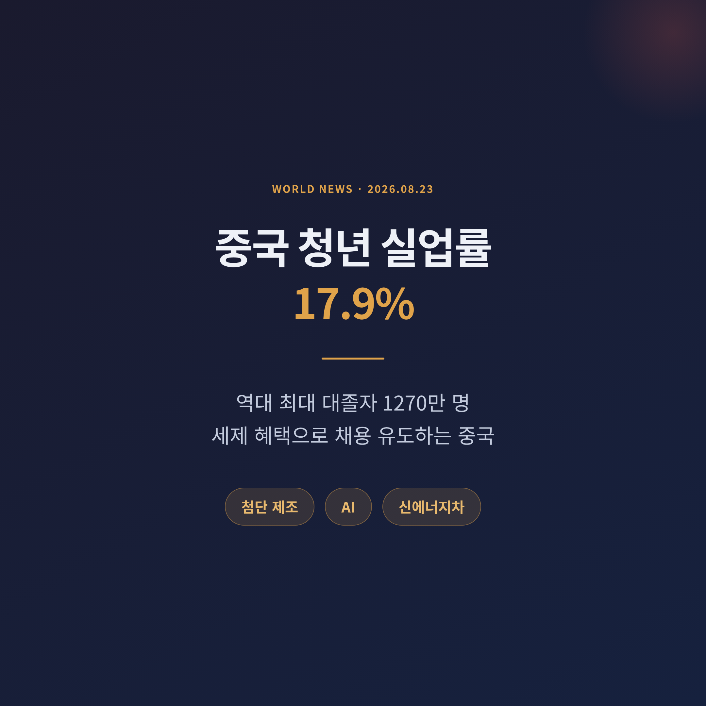
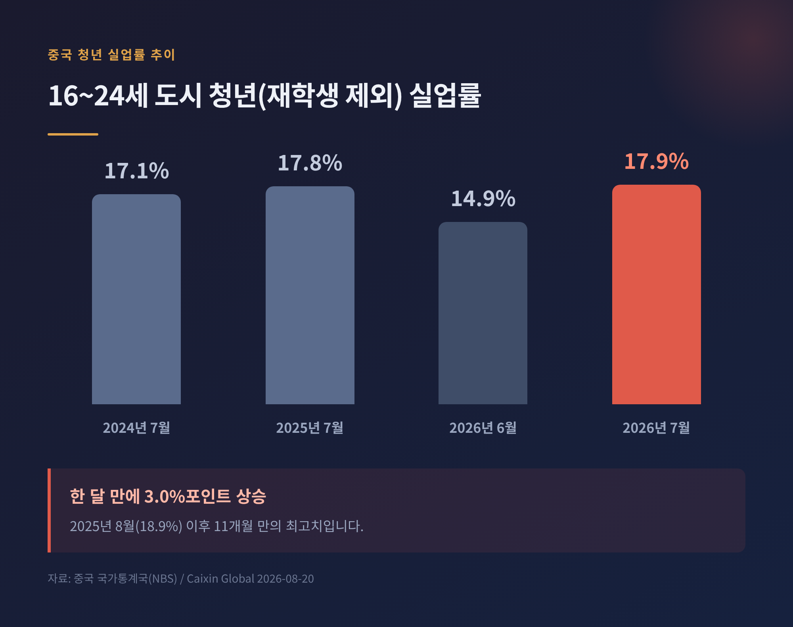
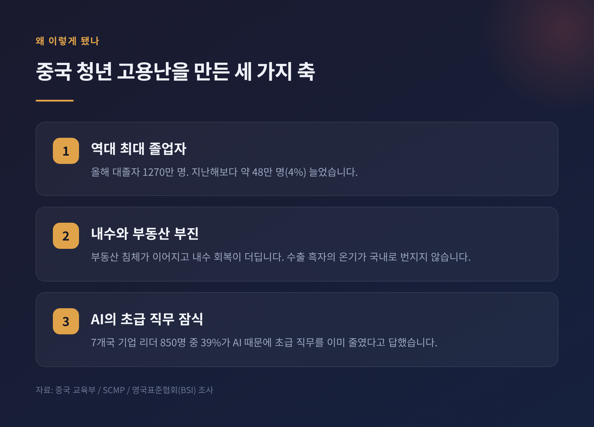
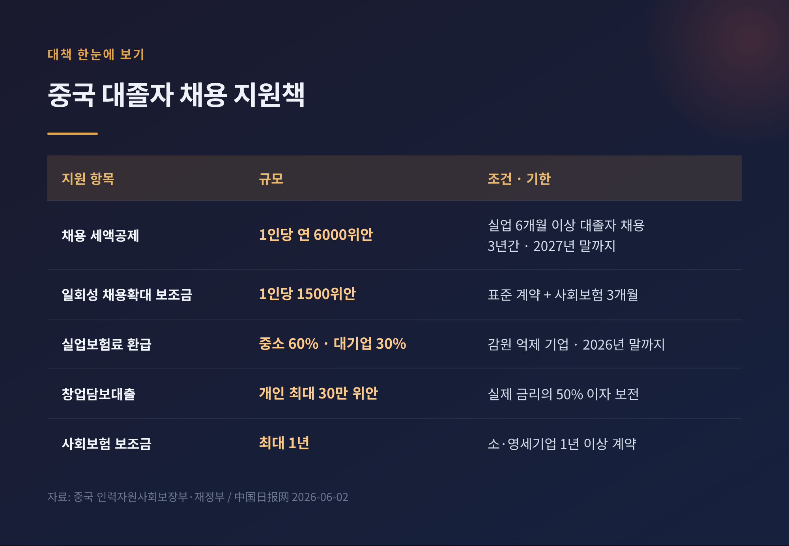
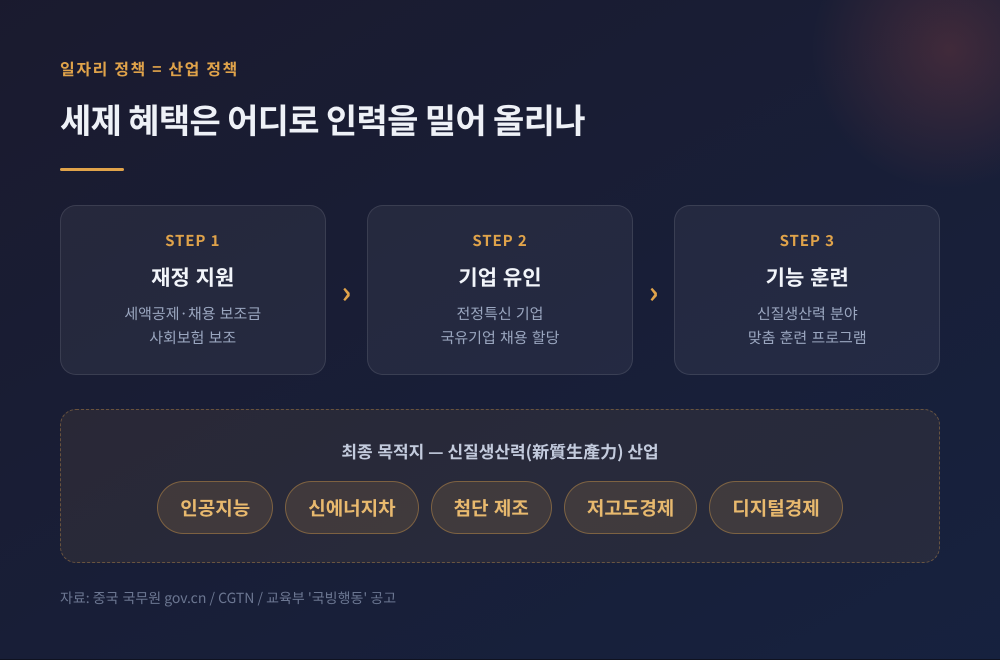
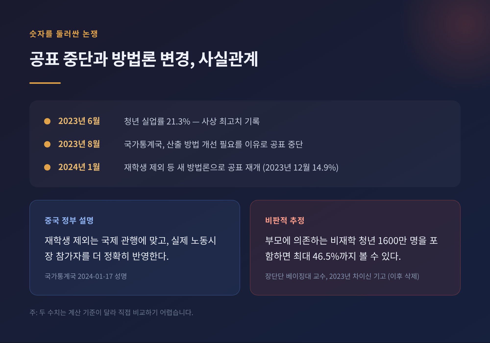
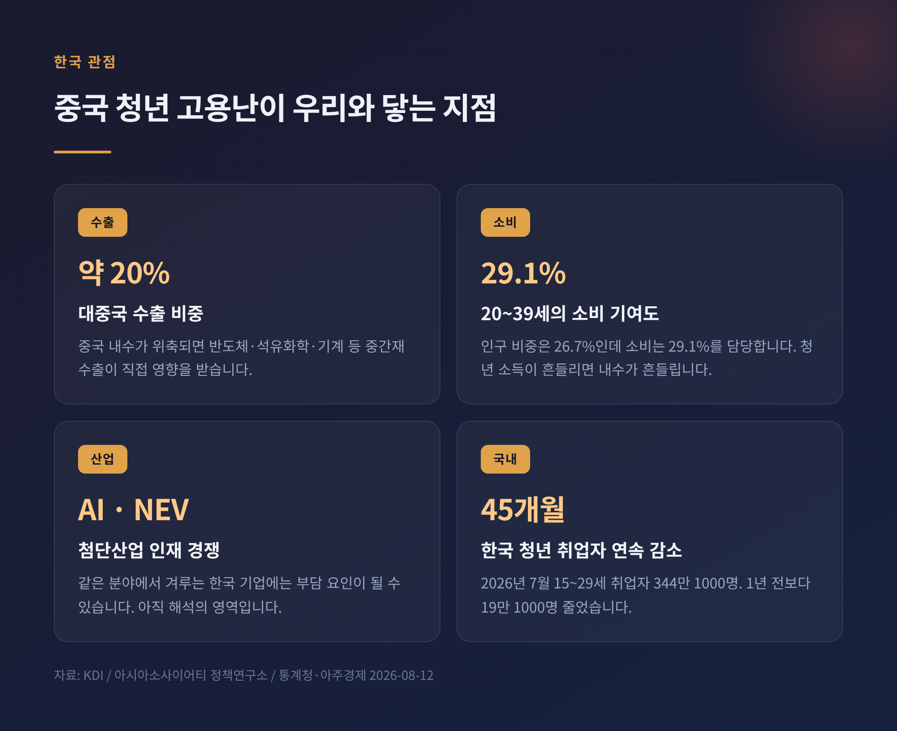

중국 청년 실업률 17.9%, 대졸 1270만 명에 세제 혜택 꺼낸 배경

이번 글에서는 2026년 8월 중국에서 나온 고용 지표와 그에 이어진 일자리 대책을 정리해 보겠습니다. 청년 실업률이 한 달 만에 3%포인트 뛰었고, 정부는 기업이 대졸자를 뽑으면 세금을 깎아주고 현금을 얹어주는 카드를 다시 꺼냈습니다. 어디까지가 확인된 수치이고 어디부터가 해석인지, 그리고 이 일이 한국과 어떻게 이어지는지 차례로 짚어보려 합니다.
8월, 숫자 하나가 먼저 도착했습니다
중국 국가통계국이 7월 고용 지표를 내놓은 것은 8월 중순이었습니다.
재학생을 제외한 16~24세 도시 청년 실업률은 17.9%로 집계됐습니다. 6월 14.9%에서 3.0%포인트 뛴 수치입니다. 2025년 8월(18.9%) 이후 11개월 만의 최고치이고, 7월만 놓고 보면 3년 만에 가장 높습니다.
같은 달 기준으로 늘어놓으면 흐름이 보입니다. 2024년 7월 17.1%, 2025년 7월 17.8%, 2026년 7월 17.9%. 3년째 조금씩 올라가고 있습니다.
연령대별로 보면 격차가 더 뚜렷합니다. 25~29세는 7.2%, 30~59세는 3.9%였습니다. 실업이 특정 연령대에 몰려 있다는 뜻입니다.
전체 도시조사실업률은 5.2%로 6월보다 0.2%포인트 올랐습니다. 국가통계국은 이를 계절적 요인으로 설명했습니다. 1~7월 평균도 5.2%여서, 올해 목표치인 5.5% 안에 들어와 있기는 합니다.
다만 궈성증권의 슝위안 수석이코노미스트는 이 5.2%가 역사적 평균을 소폭 웃도는 수준이라며, 한계 고용 압력이 커지고 있다고 진단했습니다.

1270만 명이 한꺼번에 나왔습니다
숫자가 튄 이유는 분명합니다.
올해 중국 대학 졸업자는 1270만 명입니다. 교육부 추산으로 역대 최대 규모입니다. 지난해 1222만 명보다 약 48만 명, 4%가량 늘었습니다.
중국의 청년 실업률은 원래 7~8월에 급등합니다. 졸업생이 한꺼번에 노동시장으로 밀려들기 때문입니다. 계절성 자체는 새로운 일이 아닙니다.
문제는 그 위에 얹힌 것들입니다. 부동산 침체는 아직 끝나지 않았고, 내수는 회복이 더딥니다. 수출은 기록적인 흑자를 내고 있지만 그 온기가 국내 소비로 잘 번지지 않습니다.
인재 풀은 커졌는데 기업이 원하는 기술과 어긋나 있다는 지적도 나옵니다. 졸업장이 늘어난 만큼 일자리가 늘지 않았다는 이야기입니다.
여기에 인공지능이 변수로 들어왔습니다. 신입 사원이 맡던 자료 입력, 기초 분석, 정리 업무를 기계가 대신하면서 경력 사다리의 첫 계단이 얇아지고 있다는 분석입니다. 영국표준협회가 중국·미국·일본 등 7개국 기업 리더 850명을 조사한 결과, 39%는 AI 때문에 이미 초급 직무를 줄였다고 답했고 43%는 올해 그럴 계획이라고 답했습니다.
반론도 있습니다. 미국에서는 2022년 이후 화이트칼라 일자리가 오히려 300만 개가량 늘었고, 소프트웨어 개발자는 7%, 법률보조원은 21% 증가했다는 데이터가 있습니다. AI가 일자리를 없앤다기보다 요구 경력을 끌어올려 신입의 진입 문턱을 높인다는 해석입니다.
어느 쪽이 맞는지는 아직 정리되지 않았습니다.

정부가 꺼낸 카드 — 세금과 현금
중국 정부의 대응은 하나의 발표가 아니라 여러 부처가 봄부터 순차적으로 쌓아 올린 묶음입니다. 중국에서는 이런 방식을 '조합권(組合拳)'이라고 부릅니다. 8월 지표가 나오면서 이 묶음이 다시 주목받았습니다.
핵심은 두 가지입니다. 기업의 인건비 부담을 낮추는 것, 그리고 채용 행위 자체에 현금을 얹는 것입니다.
세제 쪽부터 보겠습니다. 등록 실업 상태가 6개월 이상인 대졸자를 채용해 1년 이상 노동계약을 맺고 사회보험료를 납부하면, 기업은 3년간 1인당 연 6000위안을 세액에서 차감받습니다. 지방정부 재량으로 최대 30%까지 올릴 수 있어 1인당 연 7800위안까지 가능합니다. 차감 대상은 증치세와 도시유지건설세, 교육비부가, 기업소득세 등입니다. 집행 기한은 2027년 12월 31일까지입니다.
대졸자가 직접 창업하는 경우에도 3년간 1호당 연 2만 위안 한도로 세액을 깎아줍니다.
현금 지원은 이렇습니다.
- 일회성 채용확대 보조금: 당해 졸업생, 졸업 2년 이내 미취업자, 16~24세 등록 실업 청년을 뽑으면 1인당 1500위안. 표준 노동계약과 최소 3개월치 사회보험 납부가 조건입니다.
- 취업 견습 보조금: 미취업 졸업자를 견습으로 받는 기관에 기본생활비와 상해보험, 지도관리비를 지원합니다. 견습 도중 정규직으로 전환하면 잔여 기간분도 받을 수 있습니다.
- 사회보험 보조금: 소·영세기업이 졸업 2년 이내 대졸자를 1년 이상 계약으로 채용하면 양로·의료·실업보험료를 최대 1년간 보조합니다.
- 실업보험료 환급: 감원을 억제한 기업에 중소기업은 60%, 대기업은 30%를 돌려줍니다. 올해 말까지 연장됐습니다.
- 창업담보대출: 개인은 최대 30만 위안, 소·영세기업은 최대 400만 위안까지 빌릴 수 있고 실제 금리의 절반을 재정이 부담합니다.
행정 동원도 함께 갔습니다. 교육부와 인력자원사회보장부, 국무원 국유자산감독관리위원회 등 8개 부처는 5월부터 12월까지 '국빙행동(國聘行動)'이라는 합동 채용 캠페인을 벌이고 있습니다. 국유기업이 앞장서고 민영기업이 받치는 구조입니다. 인력자원사회보장부와 재정부가 3월에 낸 통지에는 16개 조항의 실행 방안이 담겼습니다.
지방정부도 움직였습니다. 항저우는 신규 채용 1인당 1500위안을 연말까지 지급하기로 했습니다. 안후이성과 구이저우성은 국유기업 신규 채용의 절반 이상을 신입 졸업자로 채우도록 요구했습니다.

왜 하필 AI와 신에너지차인가
이번 대책에서 눈여겨볼 대목은 일자리 정책과 산업 정책이 붙어 있다는 점입니다.
중국 정부는 청년 고용의 활로를 '신질생산력(新質生產力)'에서 찾고 있습니다. 시진핑 주석이 제시한 개념으로, 기술 혁신을 통해 만들어지는 새로운 형태의 생산력을 뜻합니다. 인공지능, 신에너지차, 저고도경제, 첨단 제조, 디지털경제가 여기에 들어갑니다.
정부는 이 분야의 기능훈련 프로그램을 개발하도록 지시했습니다. 전문·정밀 기술을 가진 이른바 '전정특신(專精特新)' 기업의 고용 여력을 끌어내기 위해 사회보험 보조금과 조세 감면을 활용하라는 방침도 함께 나왔습니다. 국빙행동 역시 고용흡수력이 크고 일자리가 빠르게 늘어나는 제조·서비스 분야에 초점을 맞추고 있습니다.
의도는 읽힙니다. 청년을 사무직 경쟁에서 빼내 산업 현장으로 돌리겠다는 것입니다. 실업 대책이자 동시에 산업 인력 확보책인 셈입니다.
예전의 중국 고용 정책은 인프라 투자로 일자리를 만드는 쪽이었습니다. 지금은 특정 첨단 산업으로 사람을 유도하는 쪽에 가깝습니다.
거시 목표도 같은 방향을 가리킵니다. 올해 3월 양회에서 중국은 성장률 약 5%, 도시 신규 취업 1200만 명 이상, 도시조사실업률 약 5.5%를 목표로 제시했습니다. 상반기 도시 신규 취업은 695만 명이었습니다. 7월에는 도시 실업자 2500만 명의 재취업을 돕겠다는 인적자원·사회보장 5개년 계획도 나왔습니다.

숫자를 둘러싼 논쟁
이 대목은 사실관계만 짚고 넘어가겠습니다.
2023년 6월, 중국의 청년 실업률은 21.3%로 사상 최고치를 기록했습니다. 두 달 뒤 국가통계국은 연령별 실업률 산출 방법을 개선할 필요가 있다며 공표를 중단했습니다.
6개월 뒤인 2024년 1월 공표가 재개됐습니다. 2023년 12월 수치는 14.9%였습니다. 방법론이 바뀐 뒤였습니다.
바뀐 내용은 이렇습니다. 전일제 재학생을 산정에서 제외했고, 주 1시간이라도 일한 사람은 취업자로 잡으며, 적극적으로 구직하지 않는 청년은 실업자로 세지 않습니다. 국가통계국은 2024년 1월 성명에서 "사회에 진출해 실제로 일이 필요한 청년의 상황을 더 정확히 관측하기 위해서"라고 설명했습니다. 결과적으로 공표 수치는 크게 낮아졌습니다.
이를 두고 평가가 갈립니다.
중국 정부는 재학생을 빼는 것이 국제 관행에 부합하며 노동시장 참가자를 더 정확히 반영한다는 입장입니다. 전체 실업률이 목표 범위 안에 있고 고용은 대체로 안정적이라는 설명도 함께 내놓았습니다.
반대편에서는 체감 실업이 공표치보다 훨씬 크다고 봅니다. 베이징대 경제학과 장단단 교수는 2023년 차이신 기고에서, 집에 머물며 부모에게 의존하는 비재학 청년 1600만 명을 포함하면 청년 실업률이 최대 46.5%에 이를 수 있다고 추정했습니다. 당시 공식 수치는 19.7%였습니다. 이 기고는 이후 삭제됐습니다.
물론 장 교수 추정에도 반론이 붙습니다. 경제학의 표준 정의상 적극적 구직자가 아닌 사람은 실업자로 계산하지 않기 때문입니다. 정의가 다른 두 숫자를 나란히 놓고 비교하기는 어렵습니다.
공표 중단과 방법론 변경은 사실입니다. 실제 실업 규모가 얼마인지는 계산 기준에 따라 달라집니다. 여기까지가 확인된 범위입니다.

한국에는 어떤 이야기인가
멀리 있는 남의 나라 사정으로만 보기는 어렵습니다.
첫째, 수출입니다. 한국의 대중국 수출 비중은 전체의 약 20% 수준입니다. 중국 내수가 위축되면 반도체와 석유화학, 기계 같은 중간재 수출이 곧바로 영향을 받습니다.
둘째, 소비입니다. 중국의 가계소비는 GDP의 39% 정도를 차지합니다. 그중 20~39세는 인구의 26.7%인데 소비의 29.1%를 담당합니다. 인구 비중보다 소비 기여가 큽니다. 아시아소사이어티 정책연구소는 2018년부터 2022년 사이 소비 감소분의 약 45%가 이 연령대에서 발생했다고 분석했습니다. 청년의 소득이 흔들리면 중국 내수 전체가 흔들린다는 뜻입니다. 베이징대 장웨이 교수도 부동산 침체와 청년 실업을 중국의 장기 성장률을 좌우할 핵심 변수로 꼽았습니다.
셋째, 인재와 산업 경쟁입니다. 중국이 AI와 신에너지차, 첨단 제조로 청년 인력을 대규모로 흡수하는 것은 같은 분야에서 경쟁하는 한국 기업에 부담이 될 수 있습니다. 다만 이 부분은 아직 결과가 나오지 않은 해석의 영역입니다.
넷째, 우리 사정입니다. 한국의 청년 고용도 좋지 않습니다. 2026년 7월 15~29세 취업자는 344만 1000명으로 1년 전보다 19만 1000명 줄었습니다. 45개월 연속 감소입니다. 정부는 8월 12일 기획재정부 차관 주재로 일자리 관계부처 회의를 열어 청년고용 회복 방안을 점검했고, 8월 중 대책 발표를 예고했습니다.
중국과 한국은 규모도 제도도 다릅니다. 그러나 졸업생은 늘고 초급 일자리는 줄어드는 구도는 닮아 있습니다.

이 대책은 통할 것인가
평가는 엇갈립니다.
긍정적으로 보는 쪽은 대응이 비교적 이르고 체계적이라고 말합니다. 세제와 보조금, 훈련, 채용박람회를 한 묶음으로 설계했고, 2026년 말과 2027년 말이라는 집행 기한을 명시해 기업이 계획을 세울 수 있게 했다는 점을 꼽습니다.
한계를 지적하는 쪽의 논리도 분명합니다.
지원 규모가 작습니다. 1인당 1500위안은 우리 돈으로 30만 원 안팎이고, 연 6000위안 세액공제도 인건비에 견주면 크지 않습니다. 일감이 없는 기업이 보조금 때문에 사람을 뽑기는 어렵다는 이야기입니다.
국유기업에 신입 채용 비율을 할당하는 방식도 논쟁적입니다. 시장 조정보다 행정 동원에 가깝다는 비판이 있습니다.
무엇보다 구조의 문제입니다. 졸업생 수와 산업이 필요로 하는 인력 사이의 간극은 보조금으로 메워지지 않습니다. 다수 전문가는 단기적으로 대졸 실업이 더 나빠질 수 있고, 중기적으로 산업 구조조정이 진행돼야 안정될 것으로 봅니다.
저 역시 이번 대책만으로 흐름이 바뀌리라고 보지는 않습니다. 다만 어느 방향으로 인력을 밀어 올리려 하는지는 분명하게 드러났습니다.
정리하면 이렇습니다.
확인된 사실은 셋입니다. 7월 중국 청년 실업률이 17.9%로 올랐고, 올해 대졸자가 역대 최대인 1270만 명이며, 정부가 세제 혜택과 채용 보조금을 묶은 대책을 첨단 제조와 AI, 신에너지차 쪽에 맞춰 가동하고 있다는 것입니다. 실제 실업 규모와 대책의 효과는 아직 판단할 수 있는 단계가 아닙니다.
끝으로 한 마디만 더 드리겠습니다. 이 사안의 본질은 실업률 소수점이 아니라 — 한 세대가 사회에 진입하는 통로가 좁아지고 있다는 사실입니다.
같은 일이 우리에게도 일어나고 있느냐고 물으신다면, 숫자는 이미 그렇다고 답하고 있습니다.